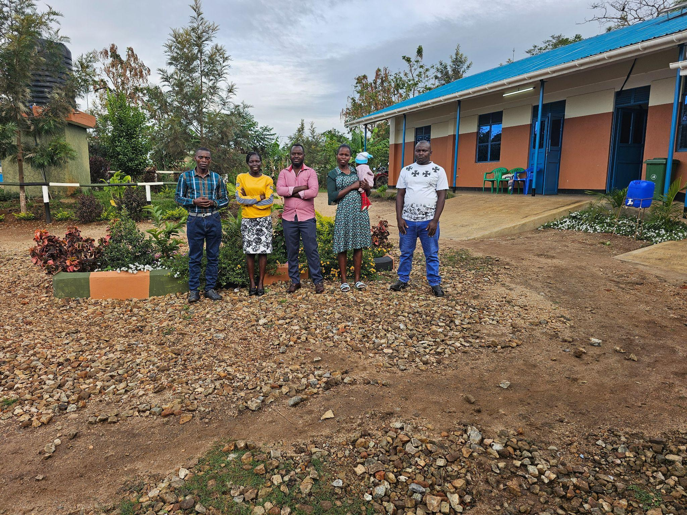

Kyangwali Refugee Settlement, Uganda
Young people building technology-powered futures.
Spectrum XLabs Alliance combines accredited secondary education, AI and digital skills, and real student enterprise so youth can become architects of their own future.
Our mission
To inspire and equip youth to achieve breakthroughs that accelerate an abundant future for all through technology.
SXLA operates at the intersection of refugee education, digital inclusion, and youth enterprise development. The flagship facility, Spectrum Secondary School, is a living lab in Kyangwali where learners study, build, trade, and prepare for an AI-enabled economy.
The model
Education, technology, and enterprise in one pathway.
SXLA moves students from classroom foundations into applied digital skills, AI-assisted learning, student-run companies, and post-secondary incubation through the planned Spectrum Innovation Hub.
- Accredited Uganda National Curriculum from Senior 1 to Senior 4.
- Digital foundations, AI tools, and technology for business across the school years.
- Junior Entrepreneurs Program with named roles, real products, live customers, and termly financial reviews.
- Spectrum Playbook designed to replicate the model across Uganda.

Spectrum Secondary School
Accredited secondary education in Kyangwali with integrated digital skills and entrepreneurship.
02Digital Skills and AI
Claude and ChatGPT piloted as classroom tools, with campus-wide AI access targeted by the end of 2026.
03Junior Entrepreneurs Program
Students form companies, manage accounts, serve customers, and build a documented track record.
04Spectrum Innovation Hub
A planned Hoima business acceleration facility for workspace, incubation, mentoring, and investor access.
